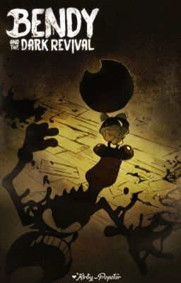
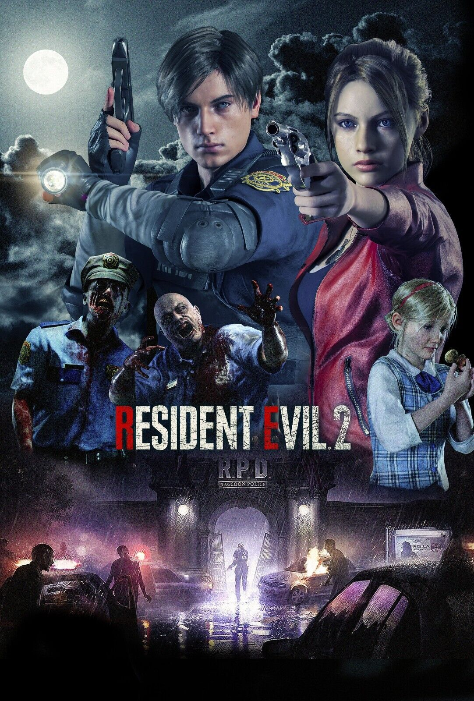
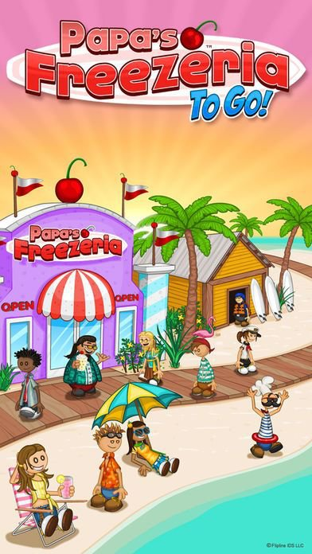
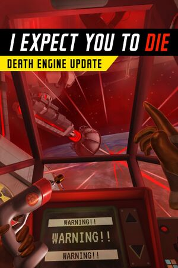
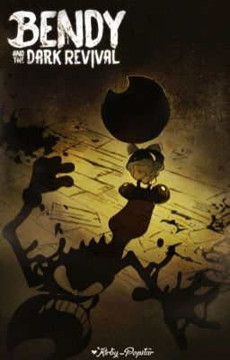
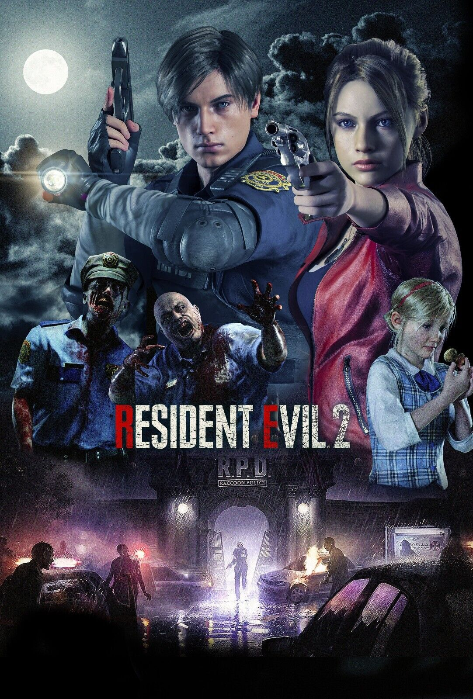
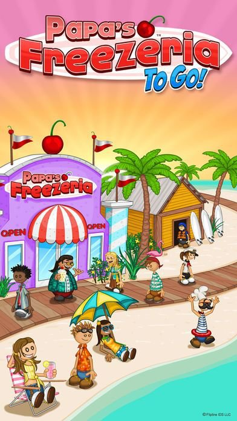
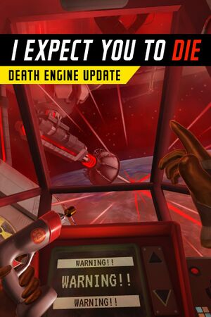

Dit is mijn profiel pagina
-
Naam
Kylian Rocco van Helden
-
Leeftijd
18 jaar
-
Woonplaats + woonsituatie
Zomeraagt 27, Vlissingen bij ouders
-
Vooropleiding(en) + profiel
Gymnasium NT/NG
-
Eigenschappen
- slim
- hard werkend
- snel afgeleid
- geeft niet snel op
- sarcastisch
- introvert
- licht autistisch
-
Buitenschoolse activiteiten
-
Gitaar spelen en naar muziek luisteren
Ik speel al sinds dat ik 9 was gitaar en hou ervan om naar rock of metal muziek te luisteren.
-
Werken
- Ik heb 2 jaar bij restaurant de Dis in dishoek gewerkt als afwasser voordat het failliet ging.
- Daarna heb ik net iets minder dan een jaar bij de kruidvat gewerkt totdat de restaurants weer open gingen.
- Nu heb ik 3 zomers gewerkt bij kon-tiki beachclub waar ik nu nog steeds werk.
-
Gamen
 







-